Notes
Notes on planning an invitation.
What we have learned building these, written for the person doing the planning rather than for a search engine.
- 27 October 2026 · 4 min readDigital invitation card in Saddar & Cantt, Peshawar: online shadi card guideSaddar & Cantt, Peshawar ke ghar, venues aur mehmanon ke liye online shadi card: address kaise likhein, map, waqt aur tayyar WhatsApp message.Read →
- 27 October 2026 · 4 min readDigital invitation card in University Town, Peshawar: online shadi card guideUniversity Town, Peshawar ke ghar, venues aur mehmanon ke liye online shadi card: address kaise likhein, map, waqt aur tayyar WhatsApp message.Read →
- 27 October 2026 · 4 min readDigital invitation card in Hayatabad, Peshawar: online shadi card guideHayatabad, Peshawar ke ghar, venues aur mehmanon ke liye online shadi card: address kaise likhein, map, waqt aur tayyar WhatsApp message.Read →
- 27 October 2026 · 4 min readDigital invitation card in Bahria Town Rawalpindi, Rawalpindi: online shadi card guideBahria Town Rawalpindi, Rawalpindi ke ghar, venues aur mehmanon ke liye online shadi card: address kaise likhein, map, waqt aur tayyar WhatsApp message.Read →
- 27 October 2026 · 4 min readDigital invitation card in Chaklala, Rawalpindi: online shadi card guideChaklala, Rawalpindi ke ghar, venues aur mehmanon ke liye online shadi card: address kaise likhein, map, waqt aur tayyar WhatsApp message.Read →
- 27 October 2026 · 4 min readDigital invitation card in Satellite Town, Rawalpindi: online shadi card guideSatellite Town, Rawalpindi ke ghar, venues aur mehmanon ke liye online shadi card: address kaise likhein, map, waqt aur tayyar WhatsApp message.Read →
- 27 October 2026 · 4 min readDigital invitation card in Saddar, Rawalpindi: online shadi card guideSaddar, Rawalpindi ke ghar, venues aur mehmanon ke liye online shadi card: address kaise likhein, map, waqt aur tayyar WhatsApp message.Read →
- 27 October 2026 · 4 min readDigital invitation card in Wapda Town, Lahore: online shadi card guideWapda Town, Lahore ke ghar, venues aur mehmanon ke liye online shadi card: address kaise likhein, map, waqt aur tayyar WhatsApp message.Read →
- 27 October 2026 · 4 min readDigital invitation card in Bahria Town Lahore, Lahore: online shadi card guideBahria Town Lahore, Lahore ke ghar, venues aur mehmanon ke liye online shadi card: address kaise likhein, map, waqt aur tayyar WhatsApp message.Read →
- 27 October 2026 · 4 min readDigital invitation card in Model Town, Lahore: online shadi card guideModel Town, Lahore ke ghar, venues aur mehmanon ke liye online shadi card: address kaise likhein, map, waqt aur tayyar WhatsApp message.Read →
- 27 October 2026 · 4 min readDigital invitation card in Johar Town, Lahore: online shadi card guideJohar Town, Lahore ke ghar, venues aur mehmanon ke liye online shadi card: address kaise likhein, map, waqt aur tayyar WhatsApp message.Read →
- 27 October 2026 · 4 min readDigital invitation card in Gulberg, Lahore: online shadi card guideGulberg, Lahore ke ghar, venues aur mehmanon ke liye online shadi card: address kaise likhein, map, waqt aur tayyar WhatsApp message.Read →
- 27 October 2026 · 4 min readDigital invitation card in DHA Lahore, Lahore: online shadi card guideDHA Lahore, Lahore ke ghar, venues aur mehmanon ke liye online shadi card: address kaise likhein, map, waqt aur tayyar WhatsApp message.Read →
- 27 October 2026 · 4 min readDigital invitation card in DHA Islamabad, Islamabad: online shadi card guideDHA Islamabad, Islamabad ke ghar, venues aur mehmanon ke liye online shadi card: address kaise likhein, map, waqt aur tayyar WhatsApp message.Read →
- 27 October 2026 · 4 min readDigital invitation card in I-8, Islamabad: online shadi card guideI-8, Islamabad ke ghar, venues aur mehmanon ke liye online shadi card: address kaise likhein, map, waqt aur tayyar WhatsApp message.Read →
- 27 October 2026 · 4 min readDigital invitation card in G-11, Islamabad: online shadi card guideG-11, Islamabad ke ghar, venues aur mehmanon ke liye online shadi card: address kaise likhein, map, waqt aur tayyar WhatsApp message.Read →
- 27 October 2026 · 4 min readDigital invitation card in E-11, Islamabad: online shadi card guideE-11, Islamabad ke ghar, venues aur mehmanon ke liye online shadi card: address kaise likhein, map, waqt aur tayyar WhatsApp message.Read →
- 27 October 2026 · 4 min readDigital invitation card in F-11, Islamabad: online shadi card guideF-11, Islamabad ke ghar, venues aur mehmanon ke liye online shadi card: address kaise likhein, map, waqt aur tayyar WhatsApp message.Read →
- 27 October 2026 · 4 min readDigital invitation card in F-10, Islamabad: online shadi card guideF-10, Islamabad ke ghar, venues aur mehmanon ke liye online shadi card: address kaise likhein, map, waqt aur tayyar WhatsApp message.Read →
- 27 October 2026 · 4 min readDigital invitation card in F-7, Islamabad: online shadi card guideF-7, Islamabad ke ghar, venues aur mehmanon ke liye online shadi card: address kaise likhein, map, waqt aur tayyar WhatsApp message.Read →
- 27 October 2026 · 4 min readDigital invitation card in F-6, Islamabad: online shadi card guideF-6, Islamabad ke ghar, venues aur mehmanon ke liye online shadi card: address kaise likhein, map, waqt aur tayyar WhatsApp message.Read →
- 27 October 2026 · 5 min readDigital invitation card in Gujranwala: online shadi card ki guide (گوجرانوالہ)Gujranwala ki bari biradri wali shadiyon aur GT Road ke marquees ke liye online card: sahi map, khane ka waqt aur har ghar ke liye seats.Read →
- 27 October 2026 · 5 min readDigital invitation card in Sialkot: online shadi card ki guide (سیالکوٹ)Sialkot ki shadiyon ke liye online card: UK aur Europe mein base bari biradri, Sialkot Airport se seedha venue, aur exporters ke karobari mehman.Read →
- 27 October 2026 · 5 min readDigital invitation card in Hyderabad: online shadi card ki guide (حیدرآباد)Hyderabad (Sindh) ki shadiyon ke liye online card: Qasimabad aur Auto Bhan Road ke halls, Karachi se aane wale mehman aur Sindhi rasmon ke functions.Read →
- 27 October 2026 · 5 min readDigital invitation card in Quetta: online shadi card ki guide (کوئٹہ)Quetta ki sardiyon, Jinnah Road ke halls aur poore Balochistan se aane wale mehmanon ke liye online card: map, waqt aur safar ki planning ek link mein.Read →
- 27 October 2026 · 5 min readDigital invitation card in Peshawar: online shadi card ki guide (پشاور)Peshawar ki shadiyon, Ring Road ke marquees aur door ke mehmanon ke liye online card: rasmi mazmoon, saaf map aur ghar ke hisaab se seats.Read →
- 27 October 2026 · 5 min readDigital invitation card in Multan: online shadi card ki guide (ملتان)Madinat-ul-Auliya ki shadiyon ke liye online card: Bosan Road aur Cantt ke marquees, door ke gaon se aane wale mehman, aur garmi se pehle ka season.Read →
- 27 October 2026 · 5 min readDigital invitation card in Faisalabad: online shadi card ki guide (فیصل آباد)Faisalabad ki bari biradri wali shadiyon, Canal Road ke marquees aur textile business ke mehmanon ke liye online shadi card.Read →
- 27 October 2026 · 5 min readDigital invitation card in Rawalpindi: online shadi card ki guide (راولپنڈی)Pindi ke Saddar, Satellite Town aur GT Road ke marquees ke liye online shadi card: sahi address, waqt, aur bari biradri tak ek link.Read →
- 27 October 2026 · 5 min readDigital invitation card in Islamabad: online shadi card ki guide (اسلام آباد)Islamabad ke sectors, Margalla ke farmhouses aur Murree Road ke halls ke liye online wedding card: map, timing aur mehmanon ki gintii ek link mein.Read →
- 27 October 2026 · 5 min readDigital invitation card in Lahore: online shadi card ki guide (لاہور)Lahore ki lambi shadiyon, Mall Road se DHA tak ke marquees aur bari guest lists ke liye online shadi card: kya likhein, kaise bhejein, kaun sa design.Read →
- 27 October 2026 · 4 min readDigital invitation card in Pakistan: har bare shehar ke liye online shadi card guidePakistan ke 11 bare shehron mein online shadi card: har shehar ke venues, season, mehman aur tayyar WhatsApp message, ek jagah.Read →
- 27 October 2026 · 8 min readDigital invitation card services in Karachi, Pakistan: online shadi card ki mukammal guideKarachi mein digital invitation card kaise banwayein: kya milta hai, qeemat kaise banti hai, DHA se Gulshan tak ke venues ke liye map, WhatsApp par bhejne ka tareeqa aur sahi service kaise chunein.Read →
- 26 October 2026 · 7 min readدعوت نامہ کیسے لکھیں: شادی، ولیمہ، نکاح، عقیقہ اور سالگرہ کے نمونےدعوت نامہ (invitation letter) کا مطلب، اس کے لازمی حصے، اور شادی، ولیمہ، نکاح، مہندی، عقیقہ، سالگرہ، ختمِ قرآن، منگنی اور دفتری تقریب کے 9 تیار اردو نمونے، WhatsApp aur online dawat nama ke saath.Read →
- 26 October 2026 · 7 min readشادی کارڈ اردو: مضمون، نمونہ، ڈیزائن اور آن لائن کارڈ کی مکمل گائیڈاردو شادی کارڈ کی مکمل گائیڈ: کارڈ کے حصے، ہر تقریب کا مضمون، تیار نمونے، لکھنے کی غلطیاں، ڈیزائن کا انتخاب اور آن لائن اردو کارڈ، har mauzu ki poori guide ke link ke saath.Read →
- 26 October 2026 · 6 min readWalima meaning in Urdu: ولیمہ کا مطلب، سنت اور طریقہولیمہ کا مطلب اردو میں: لفظ کہاں سے آیا، شریعت میں اس کا درجہ، کون کرتا ہے، کب ہوتا ہے اور دعوتِ ولیمہ کا کارڈ کیسے لکھا جاتا ہے، Roman Urdu ke saath.Read →
- 23 October 2026 · 6 min readDawat-e-Walima card matter in English: 10 complete cards, line by lineThe complete English matter for a Dawat-e-Walima card: every line from the heading to the RSVP, in ten ready versions you can paste into a printed or online card.Read →
- 23 October 2026 · 6 min readشادی کارڈ کا نمونہ: Shadi card ka namoona Urdu mein, 6 poore cardShadi card ka namoona Urdu mein: 6 poore card, upar Bismillah se le kar neeche rabta number tak, har satar apni jagah par. Copy karein aur apne naam likh dein.Read →
- 23 October 2026 · 7 min readDawat-e-Walima: the complete guide to the Walima invitationDawat-e-Walima, Dawate Walima or Dawat Walima: one guide to the Walima invitation, from the Sunnah behind it to the card, the timing and the WhatsApp message.Read →
- 22 October 2026 · 5 min readولیمہ کارڈ: Walima card design aur mazmoon, ek jagahWalima card ke design, rang aur Urdu mazmoon ek hi jagah: printed card se le kar WhatsApp par jane wale online Walima card tak.Read →
- 22 October 2026 · 5 min readDawat-e-Walima meaning: what Walima is, when it happens and who hosts itDawat-e-Walima, Dawate Walima or Dawat Walima: what the words mean, why the Walima is a Sunnah, when it is held and how families invite guests to it.Read →
- 20 October 2026 · 6 min readShadi card matter in English: 10 wedding card wordings for Pakistani familiesEnglish shadi card wording that still sounds like a Pakistani wedding: formal and modern versions for each side of the family and each function.Read →
- 20 October 2026 · 7 min readشادی کارڈ کا مضمون: Shadi card ka mazmoon in Urdu (10 samples)Ten Urdu shadi card texts for the bride's side, the groom's side and every function, plus the verses, couplets and closing words families use.Read →
- 20 October 2026 · 5 min readDawat-e-Walima in English: invitation wording you can copyWhat 'Dawat-e-Walima' means, how to word it in English, and eight Walima invitations for parents, the groom, colleagues and WhatsApp.Read →
- 20 October 2026 · 6 min readDawat-e-Walima card in Urdu: دعوتِ ولیمہ کارڈ کا مضمونSix Walima card texts written in Urdu, from the formal family card to a two-line WhatsApp message, with the Islamic lines and the closing words families use.Read →
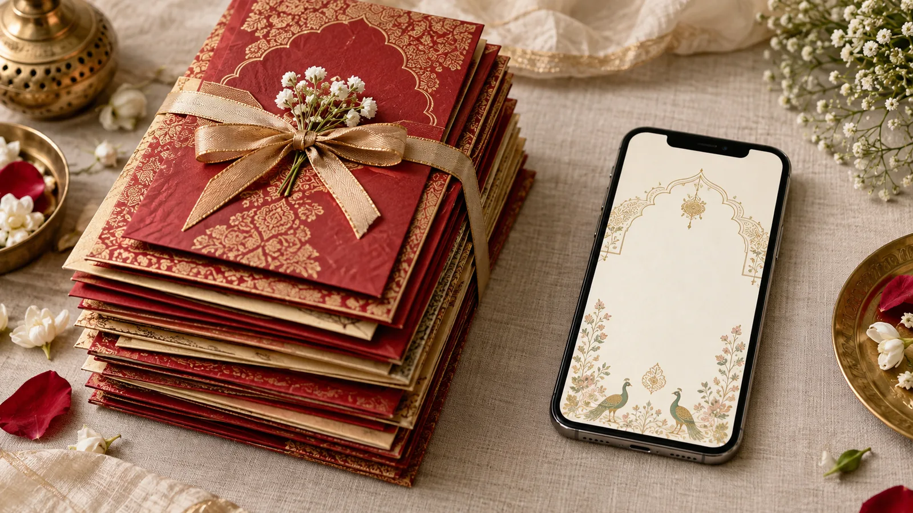
28 September 2026 · 5 min readPrinted shadi cards vs e-invites: the real cost for 200 guestsWork out what 200 printed cards really cost, with the envelopes, the delivery and the reprint, and compare it with one digital invitation.Read →- 28 September 2026 · 5 min readOnline birthday invitation cards: a guide for parents and party plannersHow to make a birthday invitation online in Pakistan, what to write for a first birthday, a kids' party or a surprise, and how to count heads.Read →
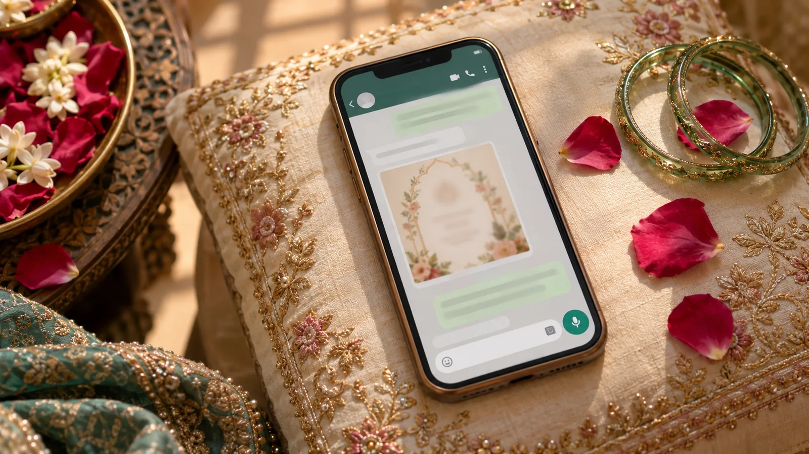
28 September 2026 · 5 min readWedding invitation messages for WhatsApp: 15 you can send todayShort, respectful WhatsApp messages to send with your wedding link: for elders, friends, colleagues, reminders and last-minute changes.Read →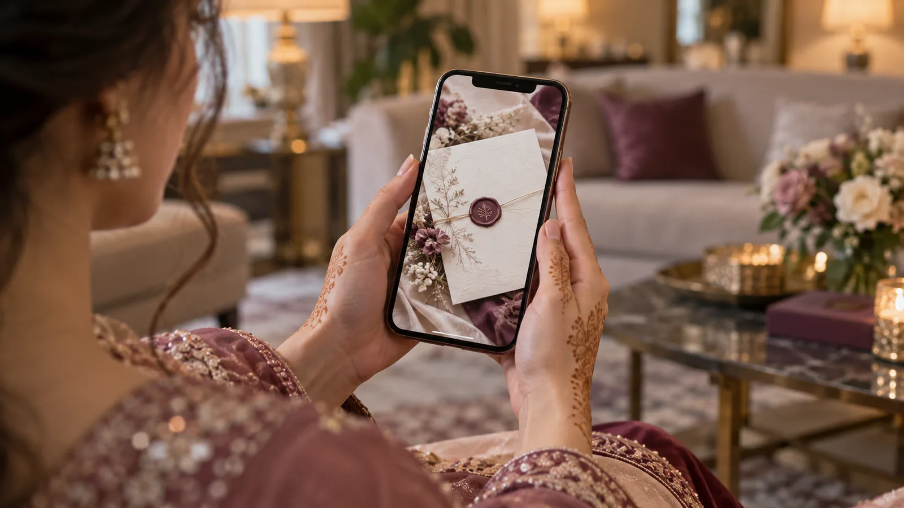
28 September 2026 · 6 min readHow to make an online wedding card in Pakistan, step by stepFrom choosing a design to sending personal links on WhatsApp: the whole process for an online shadi card, what it costs and how long it takes.Read →- 28 September 2026 · 5 min readNikkah card wording and design: simple, dignified, and correctWhat to write on a Nikkah card, which verse or hadith families use, and how to keep the design as calm as the ceremony.Read →
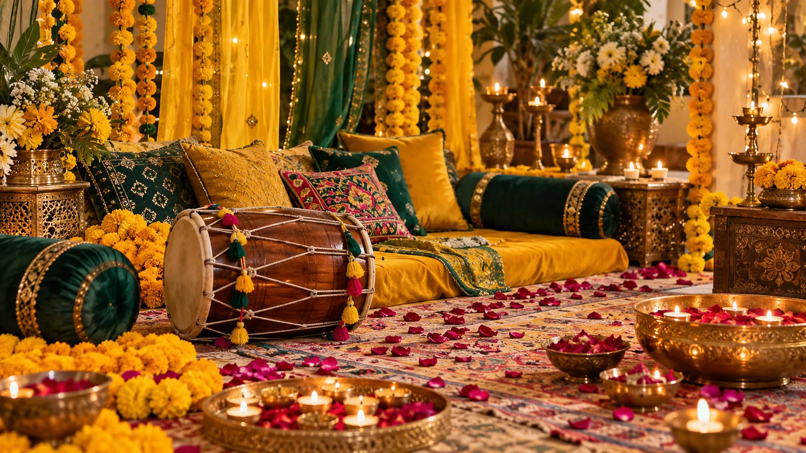
28 September 2026 · 5 min readMehndi and Dholki invitation ideas that feel like the night itselfColour, music and wording for Mehndi and Dholki invitations, plus how to invite the girls to the Dholki without sending the whole family a second card.Read →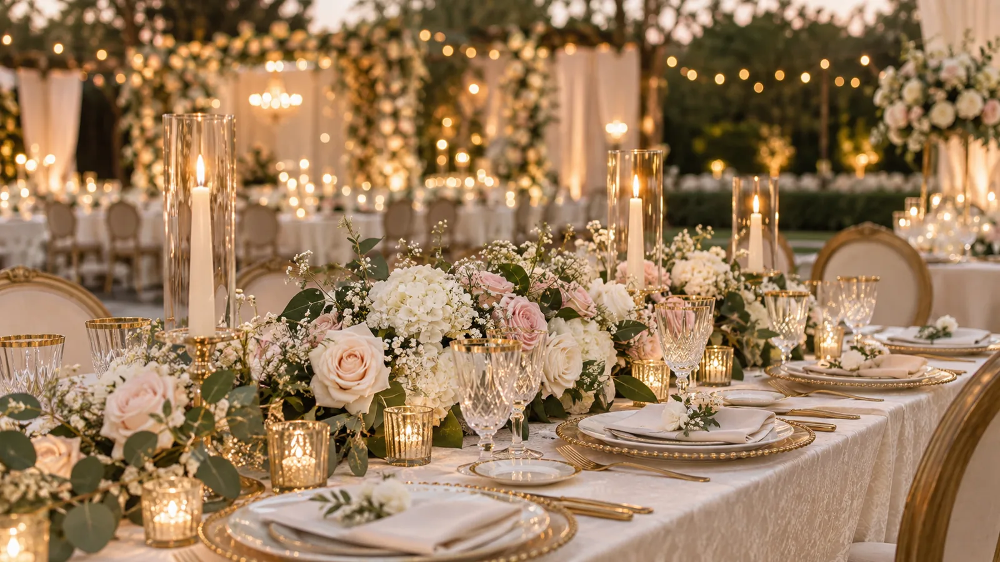
28 September 2026 · 5 min readWalima card wording: Urdu, Roman Urdu and English samplesThe Walima is hosted by the groom's family and the wording should say so. Samples for a formal card, a short WhatsApp version and a small family dinner.Read →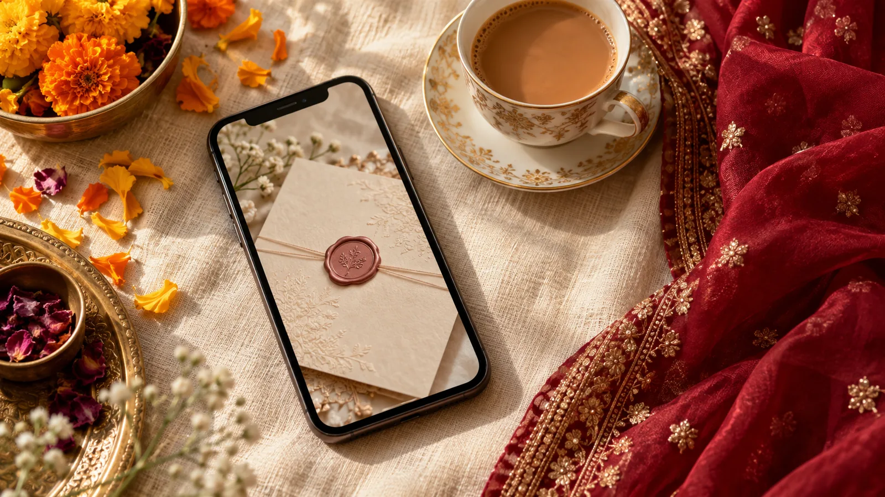
28 September 2026 · 6 min readShadi card matter in Urdu and English: wording you can copyReady-to-use wording for a Pakistani wedding card, in Urdu, Roman Urdu and English, with the lines families usually argue about sorted out.Read →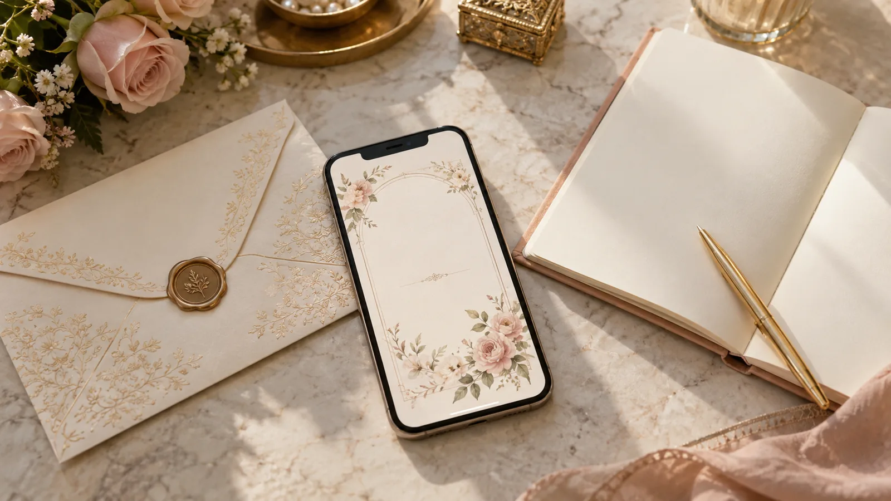
21 September 2026 · 3 min readWhat a digital wedding invitation actually costsOne price for the card, an optional pack for private guest links, and why the two-hundredth guest costs nothing extra.Read →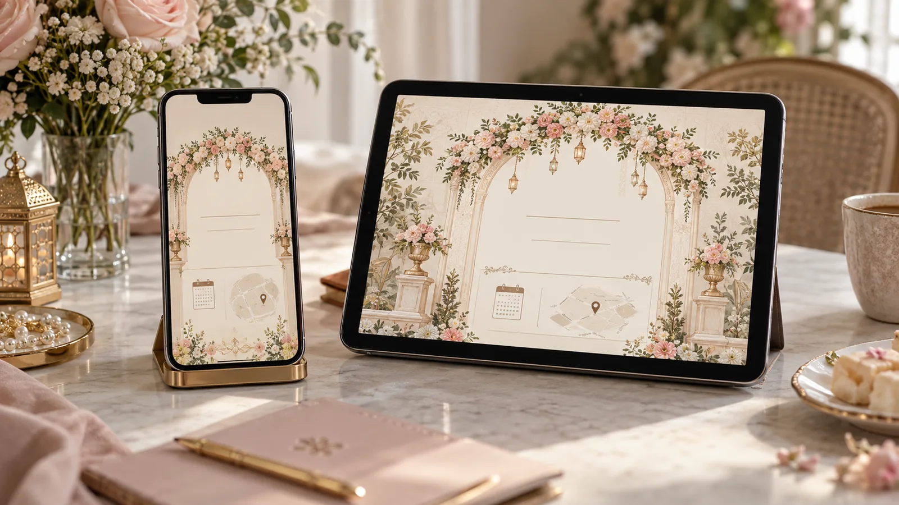
12 September 2026 · 3 min readWhat to check before you buy a digital invitationA lot of what is sold as a digital invitation is a video file with a link typed under it. Here is how to tell the difference before you pay.Read →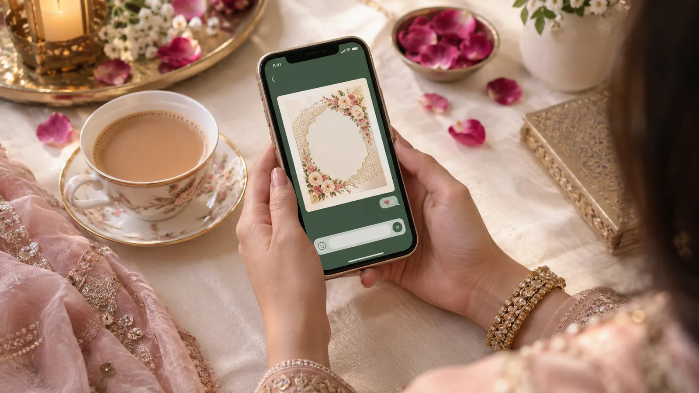
3 September 2026 · 3 min readSending your wedding invitation on WhatsApp, done rightA link opens properly in every chat. A screenshot of a screenshot does not. A few habits that make the send go smoothly.Read →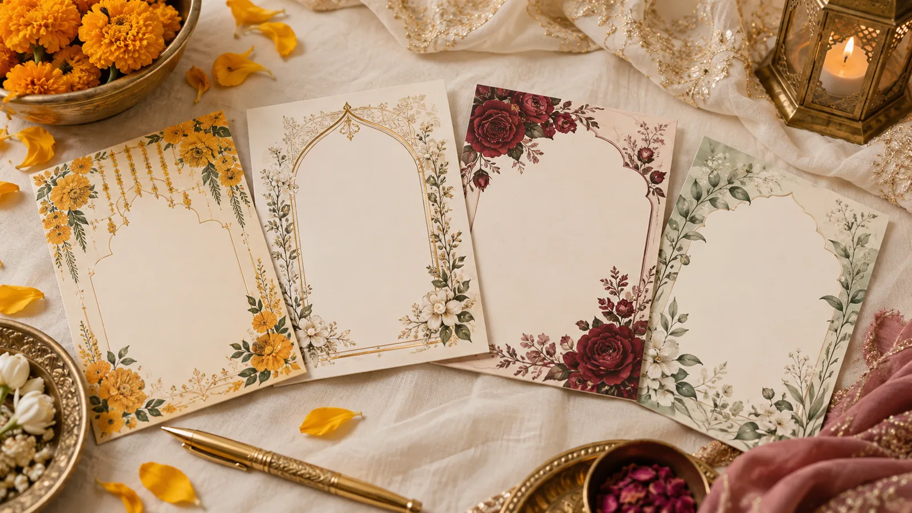
24 August 2026 · 3 min readHow many functions should your invitation list?Most families under-list their events and then spend three weeks answering the same question on WhatsApp. List them all; decide who sees which.Read →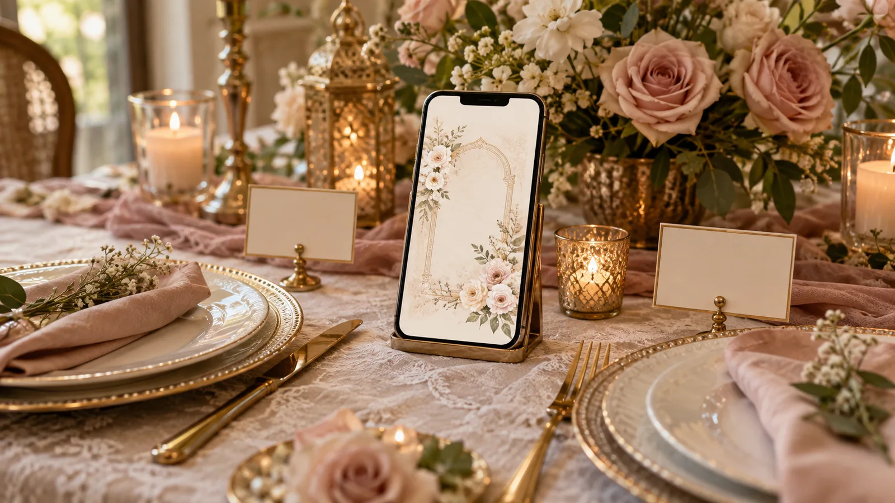
14 August 2026 · 3 min readWhat a private guest link actually isThe difference between sending one link to everybody and sending each person a page with their own name on it.Read →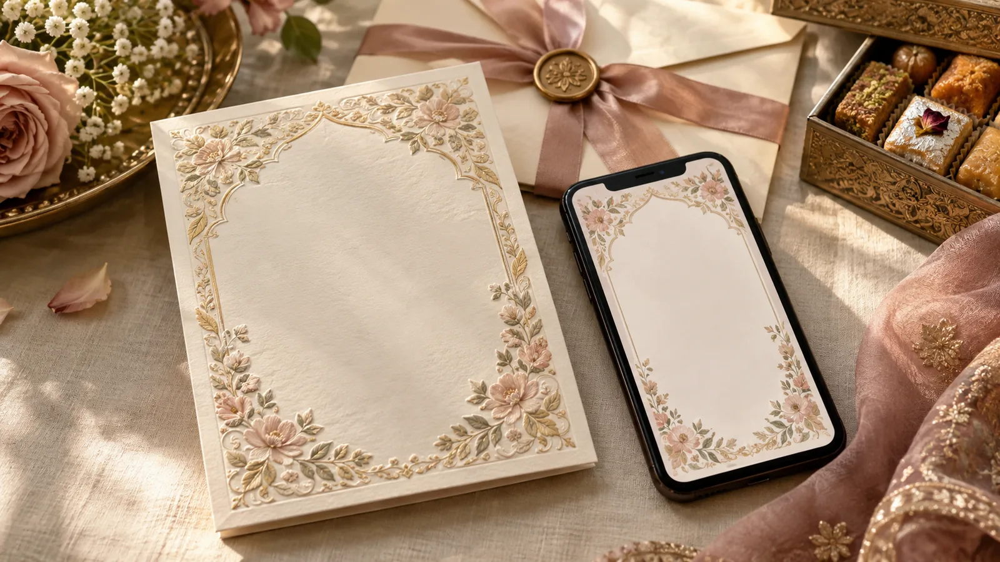
5 August 2026 · 3 min readDigital or printed: an honest comparisonWhere a printed card still wins, where it does not, and why many families end up doing a little of both.Read →
When you are ready
Every design is a working demo.
Open one and scroll it exactly as a guest would, before you spend anything.